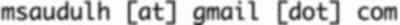

I am a software engineer at Advanced Micro Devices (AMD) in Austin, working with the team responsible for developing and maintaining MIOpen, AMD's open-source library for high-performance machine learning kernels. My role primarily concerns the development and integration of deep learning heuristics for kernel selection and tuning in MIOpen. I earned my master's degree in mechanical engineering (robotics) from Florida State University in 2021.

Publications
A Comprehensive Review of Characterizing CO2-Brine Interfacial Tension Using Machine Learning algorithms
Renewable and Sustainable Energy Reviews (Submitted)
Tractability of Stability-Constrained Trajectory Optimization
Dynamic Walking 2021
Modern Deep Neural Networks for Estimation of Direct Normal Irradiance in the Absence of Meteorological Data
(Forthcoming in 2023)
Adarmer: An Adaptive Transformer for Direct Normal Irradiance Forecasting in the Absence of Meterological Data
(Forthcoming in 2023)
Optimization of Open-loop Stable Limit Cycles with Direct Collocation and Smooth, Symbolic Derivatives
(Forthcoming in 2023)
Reformer: A Compute-efficient Transformer for Runtime Selection of Convolution Kernels
(Forthcoming in 2024)